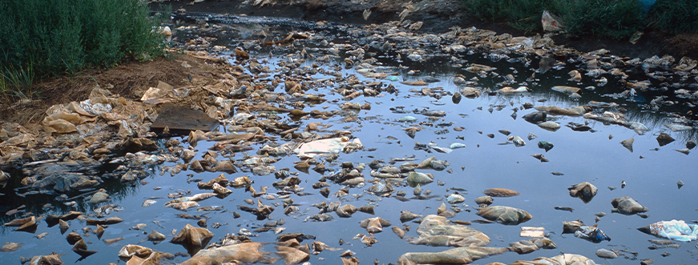
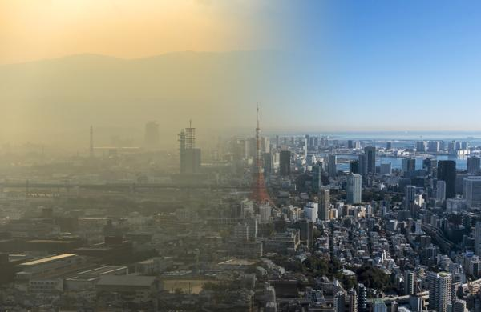
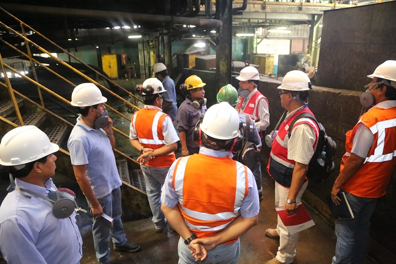
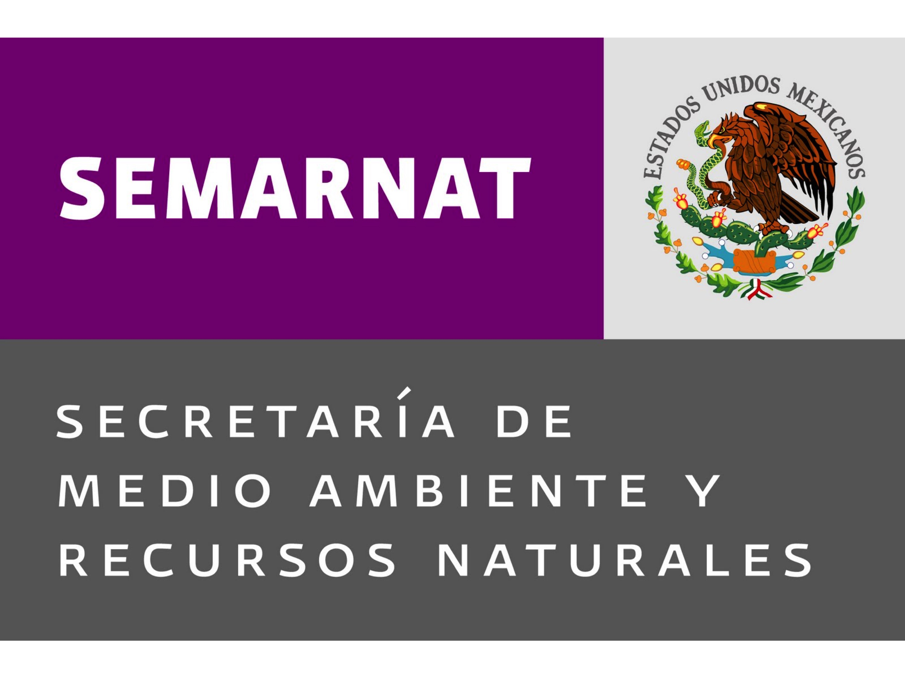
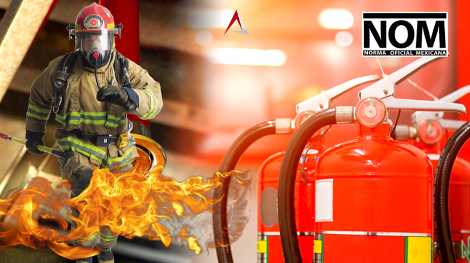
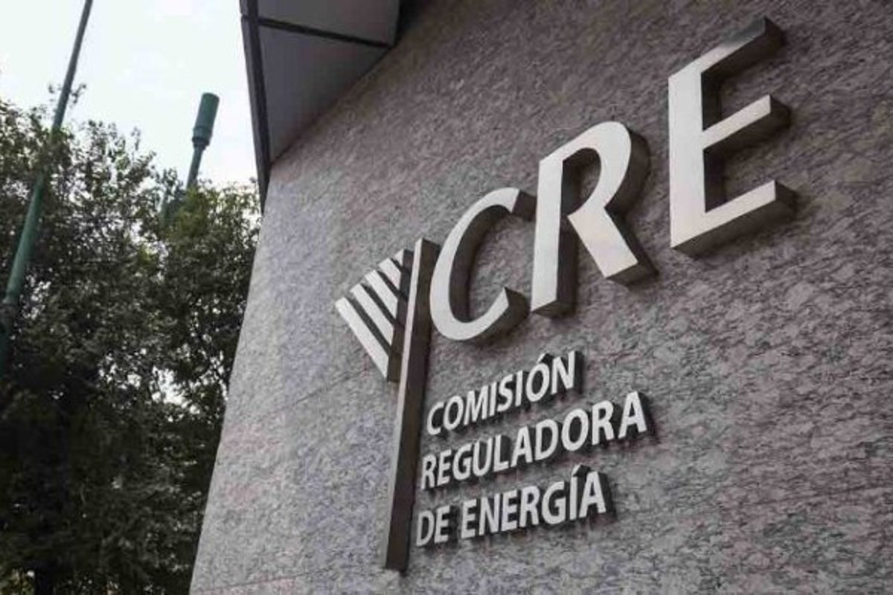
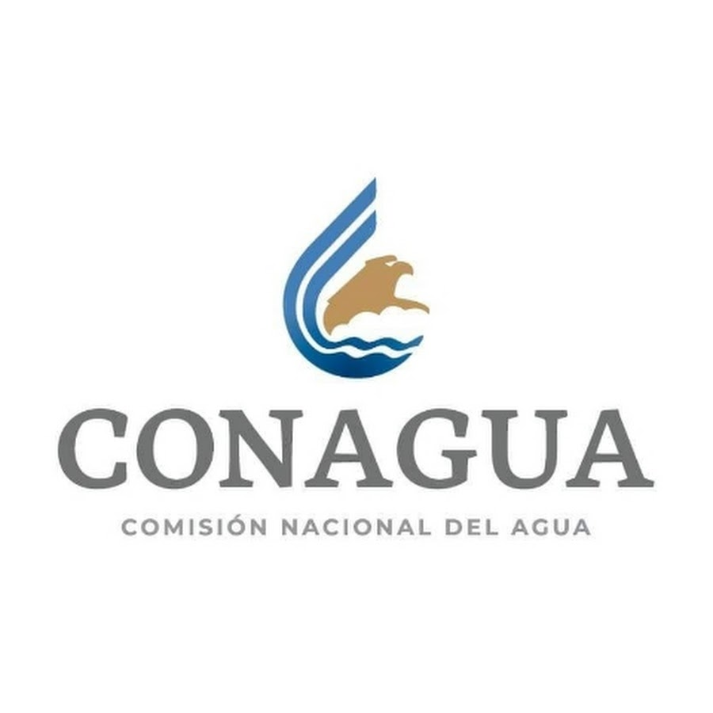
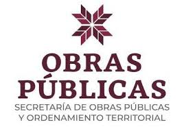
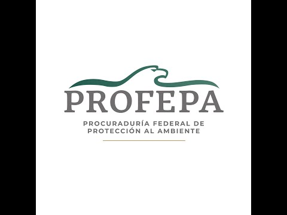
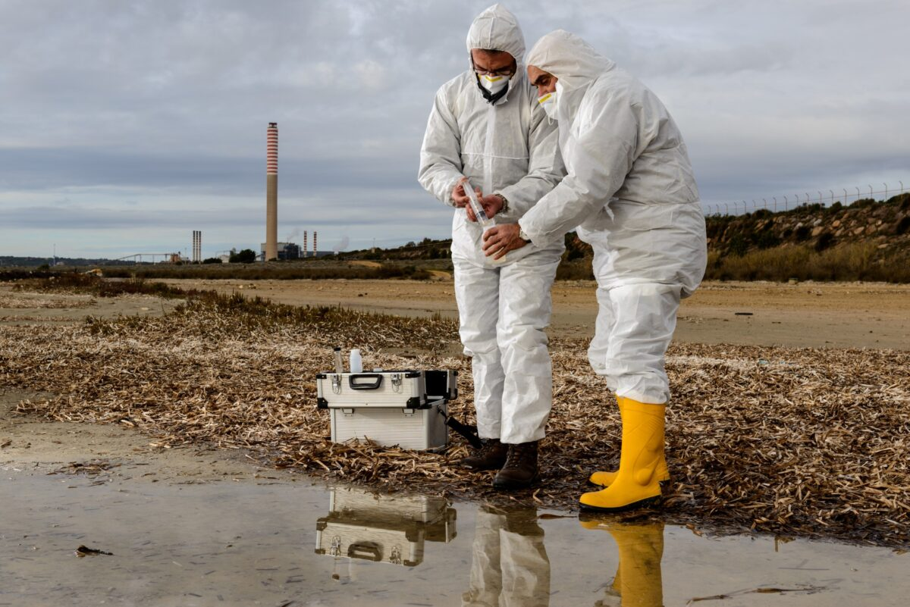

Servicios Especializados
• NOM-001-SEMARNAT-2021. Que establece los límites máximos permisibles de contaminantes en las descargas de aguas residuales en aguas y bienes nacionales.
• NOM-002-SEMARNAT-2021. Que establece los límites máximos permisibles de contaminantes en las descargas de aguas residuales a los sistemas de alcantarillado urbano o municipal.
• NOM-003-SEMARNAT-1997. establece los límites máximos permisibles de contaminantes para las aguas residuales tratadas que se reutilizan en servicios al público.
• Norma Oficial Mexicana NOM-085-SEMARNAT-2011, contaminación atmosférica-fuentes fijas.- para fuentes fijas.
• Norma Oficial Mexicana NOM-043-SEMARNAT-1993, que establece los niveles máximos permisibles de emisión a la atmósfera de partículas sólidas provenientes de fuentes fijas.
• Norma Mexicana NOM-081-SEMARNAT-1994, Que establece los límites máximos permisibles de emisión de ruido de las fuentes fijas y su método de medición.
• NOM-052-SEMARNAT-2005. Caracterización CRIT o CRETIB.
• NOM-053-SEMARNAT-1993. Extracto PECT para CRIT.
• NOM-004-SEMARNAT-2002. Lodos y Biosólidos.
• NOM-141-SEMARNAT-2003. Jales Mineros.
• NOM-133-SEMARNAT-2015. Bifenilos Policlorados.
• NOM-138-SEMARNAT/SSA1-2012. Hidrocarburos en suelos.
• NOM-147-SEMARNAT/SSA1-2004. Metales en suelos.
• Norma Oficial Mexicana NOM-036-SEMARNAT-1993, Que establece los métodos de medición para determinar la concentración de ozono en el aire ambiente.
• Norma Oficial Mexicana NOM-034-SEMARNAT-1993, que establece los métodos de medición para determinar la concentración de monóxido de carbono en el aire ambiente.
• Norma Oficial Mexicana NOM-038-SEMARNAT-1993, que establece los métodos de medición para determinar la concentración de bióxido de azufre en el aire ambiente. 1993, que establece los métodos de medición para determinar la concentración de bióxido de nitrógeno en el aire ambiente.
• Norma Oficial Mexicana NOM-035-SEMARNAT-1993, que establece los métodos de medición para determinar la concentración de partículas suspendidas totales en el aire ambiente.
• NOM-025-SSA1-2021. Salud ambiental. Criterio para evaluar la calidad del aire ambiente, con respecto a las particulas suspendidas PM10 y PM2.5
• NORMA Oficial Mexicana NOM-010-STPS-2014, Agentes químicos contaminantes del ambiente laboral-Reconocimiento, evaluación y control.
• NOM-011-STPS-2001, Condiciones de seguridad e higiene en los centros de trabajo donde se genere ruido. Medición Física Electricidad estática en los centros de trabajo.
• Norma Oficial Mexicana NOM-015-STPS-2001, Condiciones térmicas elevadas o abatidas-Condiciones de seguridad e higiene.
• NOM-022-STPS-2015, Electricidad estática en los centros de trabajo Condiciones de seguridad.
• NORMA Oficial Mexicana NOM-024-STPS-2001, Vibraciones-Condiciones de seguridad e higiene en los centros de trabajo.
• NOM-025-STPS-2008. Condiciones de iluminación en los centros de trabajo.
• NOM-012-STPS-2012. Radiaciones Ionizantes.
• NOM-013-STPS-1993. Radiaciones No Ionizantes.
• Programa Interno de Protección Civil.
• Opinion Tecnica de Seguridad.
• Opinion Tecnica de Factibilidad.
• Estudio de riesgo y Vulnerabilidad.
• Plan de Prevención de Accidentes (PPA)
• NOM-030 -STTPS-2009. Servicios preventivos de seguridad y salud en el trabajo.
• NOM-036-1-STPS-2018. Factores de riesgo ergonómico en el trabajo.
• NOM-010-STPS-2014. AGENTES QUÍMICOS CONTAMINANTES DEL AMBIENTE.
• ENOM-011-STPS-2001. CONDICIONES DE SEGURIDAD E HIGIENE.
• NOM -015-STPS-2001. CONDICIONES TERMICAS ELEVADAS.
• NOM-024-STPS-2001. VIBRACIONES.
• NOM-025-STPS-2008. CONDICIONES DE ILUMINACIÓN EN LOS CENTROS DE TRABAJO.
• NOM-018-STPS-2015. SUSTANCIAS QUIMICAS.
• NOM-019-STPS-2011. COMISION DE SEGURIDAD E HIGIENE.
• NOM-026-STPS-1998. Colores y señales de seguridad e higiene.
• NOM-009-STPS-2011. Condiciones de seguridad para realizar trabajos en altura.
• NOM-033-STPS-2015. Condiciones de seguridad para realizar trabajos en espacios confinados.
• NOM-004-STPS-1999. Sistemas de protección en la maquinaria.
• NOM-017-STPS-2008. Equipo de protección personal.
• NOM-029-STPS-2011. Mantenimiento de las Instalaciones Eléctricas.
• NOM-035-STPS-2018. Factores de riesgo psicosocial.
• NOM-002-STPS-2010. Prevención y protección contra incendios.
• NOM-005-STPS-1998. Manejo, transporte y almacenamiento de sustancias peligrosas.
• NOM-006-STPS-2023. Almacenamiento y manejo de materiales mediante el uso de maquinaria.
• NOM-020-STPS-2011. Recipientes sujetos a presión y calderas.
• NOM-028-STPS-2012. Seguridad en procesos y equipos con sustancias químicas.
• NOM-037-STPS-2023. Teletrabajo.
• NOM-022-STPS-2015. Electricidad estática.
• NOM-027-STPS-2008. Actividades de soldadura y corte.
• NOM-012-STPS-2012. Condiciones de seguridad y salud en fuentes de radiación íonizante.
• NOM-013-STPS-1993. Condiciones de seguridad en fuentes de radiaciones electromagnéticas no ionizantes.
• NOM-014-STPS-2000. Exposición laboral a presiones ambientales anormales.
• Regulación Ambiental.
• Estudio en Materia de Impacto Ambiental mediante Informe Preventivo.
• Estudio en Materia de Impacto Ambiental mediante Manifestación de Impacto Ambiental Particular.
• Tramite de Modificación de Autorizaciones de Manifestaciones de Impacto Ambiental.
• Plan de Manejo de Residuos de Manejo Especial.
• Tramite Registro como generador de Residuos de Manejo Especial.
• Instrumentación y Seguimiento de Bitácoras de Generación de Residuos de Manejo Especial.
• Instrumentación y Seguimiento de Bitácoras de Operación de Equipos y Procesos Generadores de Emisiones a la Atmósfera.
• Cédula de Operación Anual.
• Licencia Ambiental Estatal.
• Informes Preventivos.
• Estudio de Riesgo Ambiental y Programa de prevención de Accidentes.
• NOM-054-SEMARNAT-1993. Incompatibilidad entre residuos peligrosos.
• NOM-161-SEMARNAT-2011. Residuos de Manejo Especial.
• Seguimiento y cumplimiento acondicionantes.
• Autorización como transportista de residuos.
• Cálculo de Gases de Efecto Invernadero GEI.
• NOM-002-STPS-2010. Condiciones de seguridad prevención y protección contra incendios.
• NOM-020-STPS-2011. Recipientes Sujetos a Presión (RSP).
•NOM-029-STPS-2011 Establece las condiciones de seguridad para el mantenimiento de instalaciones eléctricas en los centros de trabajo.
• Trámite para obtener el Permiso de Venta de Petrolíferos Modalidad Expendio.
• Trámite para obtener el Permiso de Venta de Petrolíferos Modalidad Transporte.
• Estudio de Impacto Social.
• Conformación e implementación de un Sistema de Gestión de Medición (SGM) con el objetivo de que los resultados de medición sean conformes con las Especificaciones metrológicas. El modelo del SGM puede ser equivalente al contenido de la norma NMX-EC-17025 o NMX-CC-10012-IMNC-2004, o las que las sustituyan (RESOLUCIÓN Núm. RES/811/2015).
• Conformación e Implementación del “Sistema De Administración de Seguridad Industrial, Seguridad Operativa y Protección al Medio Ambiente Aplicables a las Actividades de Expendio al Público de Petrolíferos” SASISOPA, por parte de la Agencia de Seguridad Energía y Ambiente (ASEA).
• Estudio en Materia de Impacto Ambiental mediante Informe Preventivo.
• Estudio en Materia de Impacto Ambiental mediante Manifestación de Impacto Ambiental Particular.
• Tramite de Modificación de Autorizaciones de Manifestaciones de Impacto Ambiental.
• Trámite de Licencia Ambiental Única (LAU).
• Cedula de Operación Anual.
• Registro como generador de Residuos Peligrosos Registro como generador de Residuos de Manejo Especial
• Implementación, Revisión y supervisión de la Norma Oficial Mexicana NOM-005-ASEA-2016, diseño, construcción, operación y mantenimiento de estaciones de servicio para almacenamiento y expendio de diésel y gasolinas.
• Verificación bajo la NOM-005-ASEA-2016 en la Etapa de Diseño, Construcción, Operación y Mantenimiento.
• Estudio de vientos predominantes
• Estudio de riesgo ambiental
• Registro de descarga de agua residual.
• Permisos, autorizaciones y concesiones
• Licencias de construcción.
• Constancia de Uso de suelo.
• Constancia de Viabilidad.
• Estudio Urbano y Vial.
• Estudios de Riesgo y Vulnerabilidad.
• Topografía.
• Mecánica de Suelo.
• Asesoría legal.
• Apoyo técnico y legal durante visitas de inspección.
• NOM-001-STPS-2008. Condiciones de seguridad en centros de trabajo.
• NOM-002-STPS-2010. Condiciones de seguridad prevención y protección contra incendios.
• NOM-004-STPS-1999. Dispositivos de seguridad.
• NOM-005-STPS-1998. Manejo sustancias químicas peligrosas.
• NOM-006-STPS-2023. Manejo y almacenamiento de materiales.
• NOM-009-STPS-2011. Trabajos en altura.
• NOM-017-STPS-2008. Equipo de Protección Personal (EPP).
• NOM-027-STPS-2008. Actividades de soldadura.
• NOM-028-STPS-2012. Sistema para la administración del trabajo-seguridad en proceso y equipos críticos que manejan sustancias químicas peligrosas.
• NOM-029-STPS-2011. Instalaciones eléctricas.
• NOM-030-STPS-2009. Servicios preventivos de seguridad.
• NOM-033-STPS-2015. Trabajos en espacios confinados.
• NOM-036-1-STPS-2018. Factores de riesgo ergonómico en el trabajo.
• Dictamen pericial en Materia Ambiental.
• Dictamen pericial en Materia Laboral.
• Dictamen estructural.
• Dictamen electrico.
• Firma de DRyC en planeación, edificación y supervición
• Elaboración de programas y reportes ambientales.
